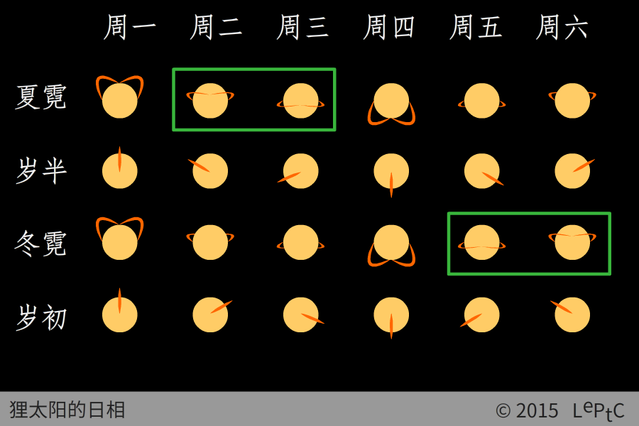

狸太阳（Lesolar）是一颗 G 型主序星，质量约 $2.1\E{30}\uni{kg}$，光球层半径 $7.0\E{5}\uni{km}$，在其日冕层靠外有一颗伴星与其组成双星系统。
伴星
狸太阳的伴星是一颗质量为其六百分之一的白矮星碎片，两星的质心距离为 $9.9\E{6}\uni{km}$（太阳半径的 14 倍），绕转周期为 6 天。阳伴双星的轨道面称为霓道，母星绕太阳公转的轨道面称为黄道，两者的夹角接近 90°。

狸日珥
伴星的引力作用在狸太阳表面诱导出一对持续喷发的巨大的日珥，其尺度接近太阳半径，在母星上肉眼可见。日珥平面与霓道面垂直，喷射点位于伴星在太阳表面投影的后方，随伴星一同旋转。霓道面的朝向十分稳定（进动周期在两百世纪以上）。在母星上可根据日相来判断当天为星期几。
霓天气
当狸日珥运行到狸星方向时，将产生霓天气，霓天气的前后两天规定为狸星的双休日。一狸周为期 6 天，上半狸年每周二、周三为双休日，下半狸年每周五、周六为双休日。每一狸年有夏霓和冬霓两轮大霓天气，届时伴星和母星运行到同一方位，太阳辐射达到最强。大霓天气母星全球可见极光，民用无线电通讯、量子通讯、中微子通讯将受到显著干扰。
学说派系
狸日珥对狸星生命演化的意义是研究人员长期争议的话题。特别派认为狸日珥对生命的形成是必要的，其主要依据是狸星尚未观测到第二个带有“耳朵”的恒星，亦未观测到第二个有智慧生命的星系，但特别派一直缺乏有力的直接证据。平庸派认为形成狸日珥只是狸星系的巧合，狸日珥不是生命形成的必要条件，但其困难在于难以解释为何宇宙中只有狸星上出现了生命。